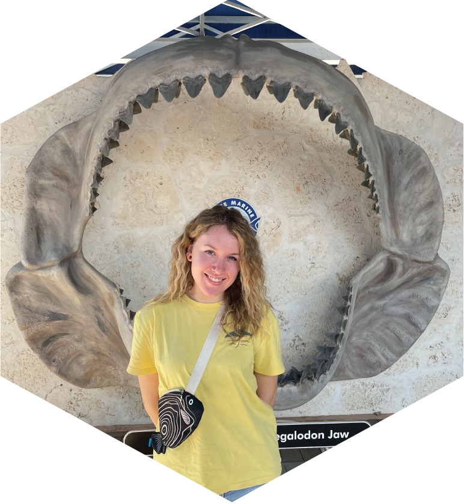

Oceanography Camp Especially for Girls

By Lauren D’Amore, MICOlab Wundergrad
June 28, 2024
I first learned of the Oceanography Camp Especially for Girls through the itinerary posted in the CMS Oceanography building elevator. A quick scan of their activities and I was already impressed and truthfully, a bit jealous. Growing up in Wisconsin, I didn’t have the chance to attend a summer camp that was quite like this. Three weeks packed with ocean and coastal lessons, visits to an aquarium, a beach cleanup, and a variety of field and lab opportunities including a few days on a research cruise—which, I continue to dream of experiencing. When Dr. Brisbin, the P.I. of the microbial research lab I work for, reached out to ask if I’d like to volunteer with the camp, I was more than happy to get involved.
The Oceanography Camp especially for Girls was founded in 1991 by the USF College of Marine Science dean, Dr. Peter Betzer, and two high school teachers of Pinellas County, Carmen Kelly and Jeanette Walker. At the time, a study had been released stating that the percentage of women pursuing an education in math and science was dwindling. Together, they brainstormed an idea to encourage young women to get involved and interested in mathematics and sciences, and thus, OCG was born, and it has been running ever since. While this program is aimed at girls entering high school who are curious about marine science, the skills and knowledge they gain are not strictly for those who want to learn about the ocean. The girls I met while volunteering had aspirations of being an astronaut, an orthodontist, a forensic diver, and a marine biologist, and although in different fields of sciences, they shared in common a desire to apply their analytical skills and advance their knowledge.
 The fun stuff - Fieldwork. Left: OCG camper pulling a plankton net along the seawall in CMS’s backyard. Middle: Campers processing plankton net samples. Right: Campers measuring the distance the plankton net was pulled to calculate the volume of water that went through the net.
The fun stuff - Fieldwork. Left: OCG camper pulling a plankton net along the seawall in CMS’s backyard. Middle: Campers processing plankton net samples. Right: Campers measuring the distance the plankton net was pulled to calculate the volume of water that went through the net.
My task as a volunteer was to assist with data collection for a research presentation the girls were delivering at the end of the week. They needed qualitative and quantitative data to do so, and so of course we began with the fun stuff: fieldwork. Heading out to the backyard of CMS, our young scientists took the lead in using a phytoplankton net to collect a couple of samples from Tampa Bay. They loved it, taking turns using the equipment and analyzing the water samples for visible critters like little fish and tiny jellies. Back in the lab the four of them filtered the water, prepared samples for chlorophyll analysis, and used the Planktoscope to take images of the microscopic plankton captured by the net. The following day, with Disney music playing in the background as a focus aid, they organized the results of their hard work.
 The hard work - processing plankton samples with the planktoscope (Left) and working on their poster for the final presentation evening (Right).
The hard work - processing plankton samples with the planktoscope (Left) and working on their poster for the final presentation evening (Right).
While the purpose of mentoring the girls was to teach them about what research can look like and why we do it, I gained a lot myself. It was very inspiring to see their passion for understanding the world around them, and their fascination when something piqued their interest. The eager attitude they carried reminded me why I started down the road of marine science in the first place, and why it matters. So much of our lives revolve around the ocean whether we recognize it or not. It’s a source of food, influences the weather, offers protection from storms, and produces half of the oxygen we breathe- just to name a few aspects. One of the best ways we can help preserve the massive biome we’re lucky to have in our backyard is by learning about it and understanding its importance. Oceanography Camp Especially for Girls is an amazing catalyst for getting young women involved through a multitude of activities, offering an abundance of ways for them to become inspired, even if they aren’t certain they want to be marine scientists. It’s a wonderful opportunity for them to better understand the world around them too, particularly as Florida residents. Volunteering with OCG has reminded me why I am pursuing an education in marine biology and makes me proud to be a woman in STEM, having worked with young women who are the future of those disciplines.
 Final Presentation Evening. Campers presented a poster and a powerpoint explaining what they did and learned in the lab to the college and their friends and families.
Final Presentation Evening. Campers presented a poster and a powerpoint explaining what they did and learned in the lab to the college and their friends and families.